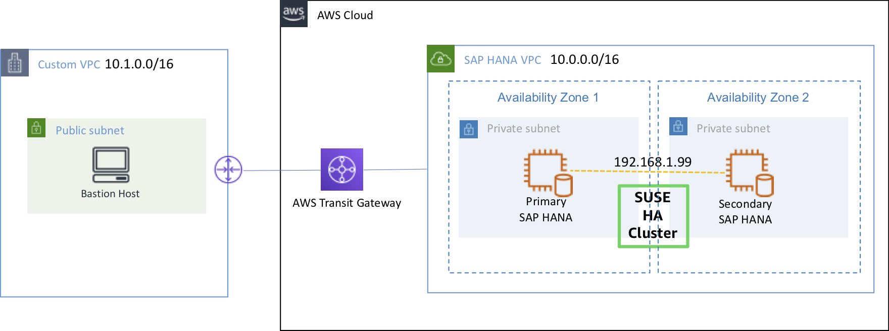
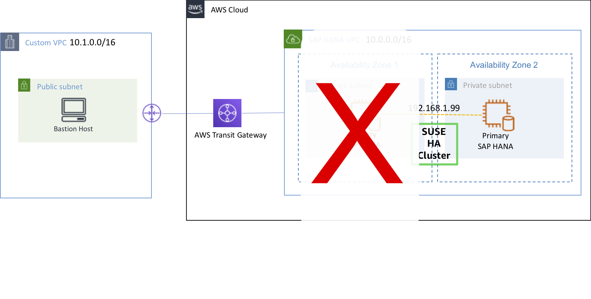
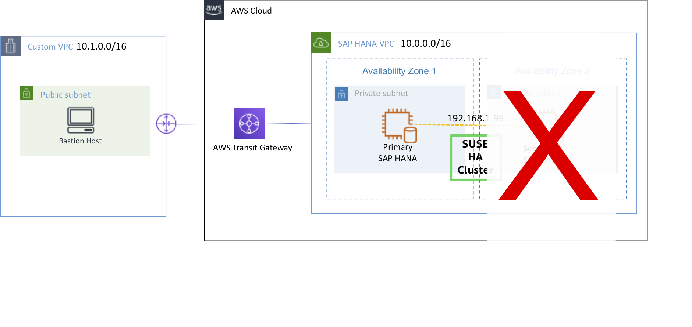

Let’s learn how to check whether S/4HANA Cluster configured in Lab01 works properly in test cases.
In this Lab, you will test the following three cases. In each case, you are going to learn how to check whether HANA DB is normally taken over.
Test Architecture 
Secondary(on sechana) to take over as Primary 
Secondary(on prihana) to fail back as Primary 
© 2020, Amazon Web Services, Inc. or its affiliates. All rights reserved.